NOT APPROVED. Palace architecture/footprint conflicts, station residual joins, platform transfer, Bakery and device evidence remain open. Eight marked reviewer images were not provided; exact annotation coverage is NOT TESTED. No main merge or public deployment.
JPEGs below are lightweight review derivatives. Native PNG links are unmodified Phaser readback at 1:1 (1280×900; full palace/station 2048×1280). Browser display may shrink them; download/open at 100% for pixel inspection. Before/after pairs share camera coordinates. Technical captures at blocked review poses are not proof of playable entrances.
Decision/status · Geometry and planning conflicts · QA · Sources/alpha/chunk audit · PLAYABLE ZIP
Overview only; use native evidence below for detail.
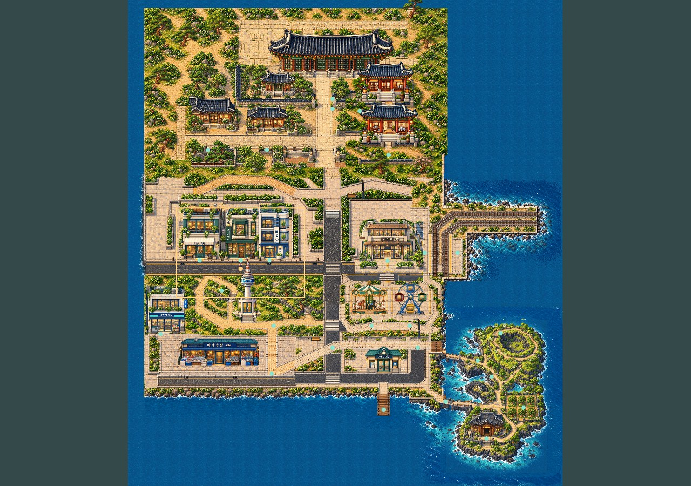
Identical registered native world rectangle. Yellow: approved building support reservations. Cyan: wall supports. Pink: ceremonial court/axis. Roof projections are not footprints. Main-hall source plinth extends40px beyond approved support; source academy is cropped. No hidden plan amendment.
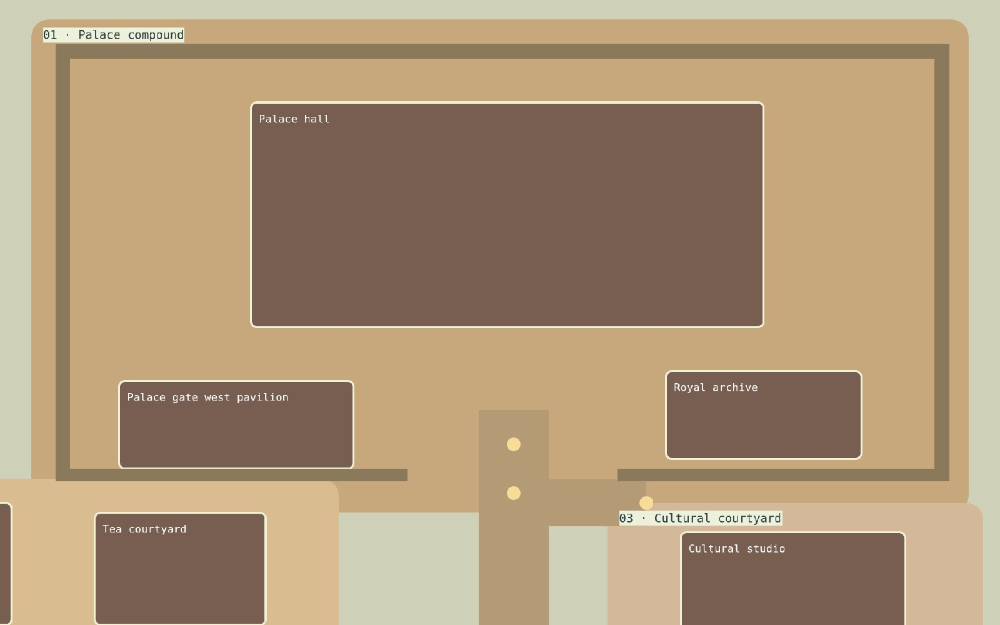
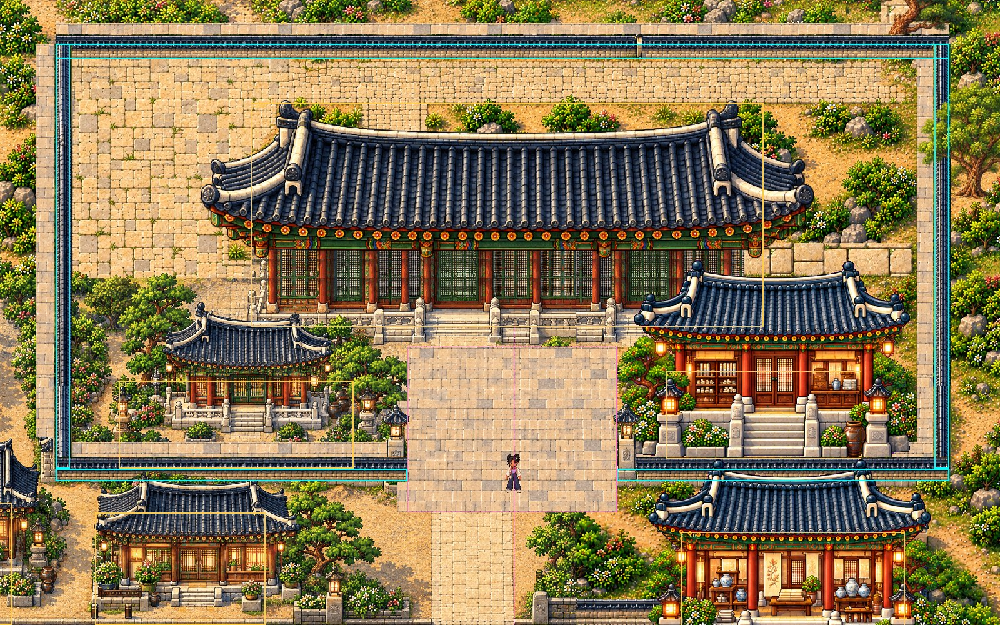
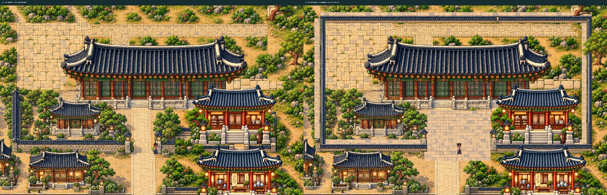
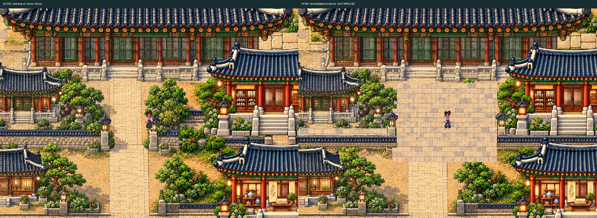
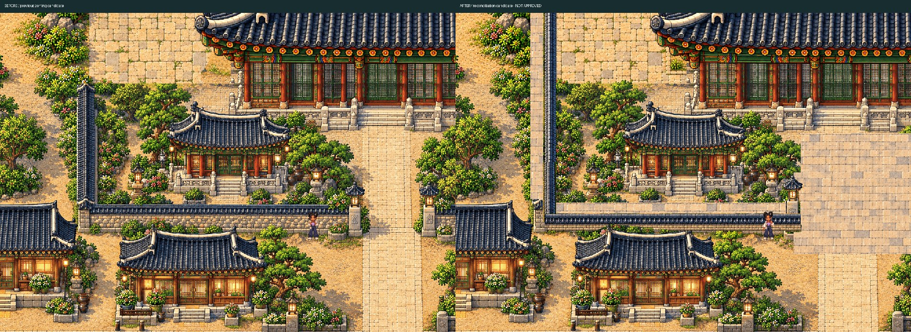
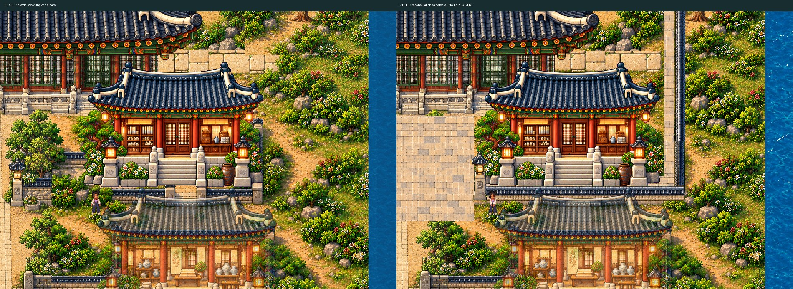
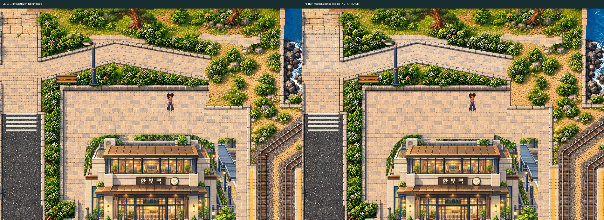
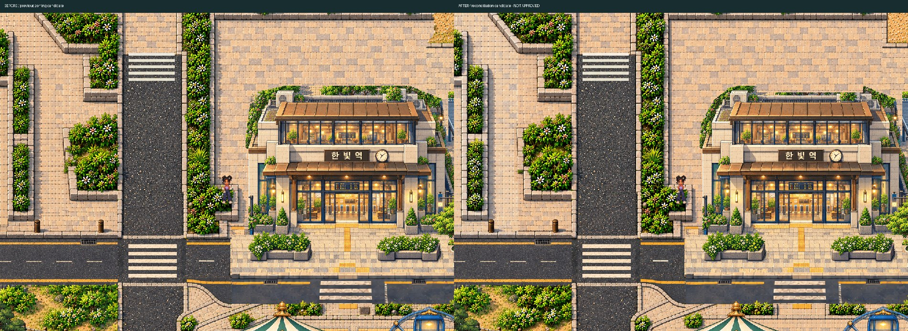
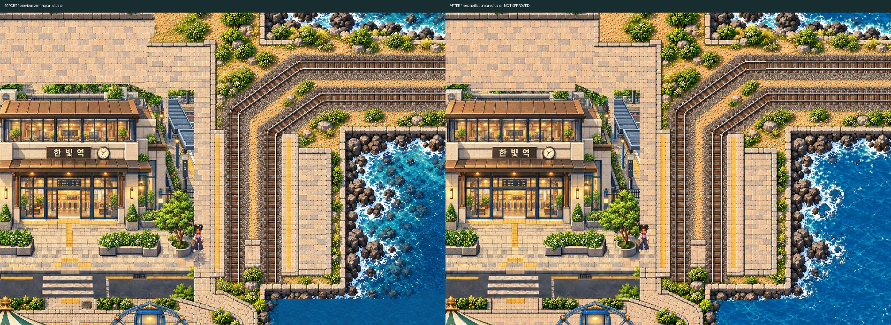
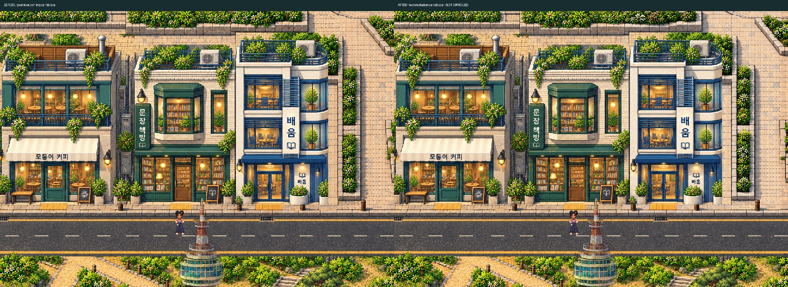
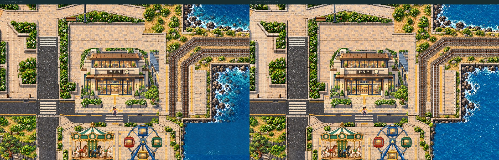
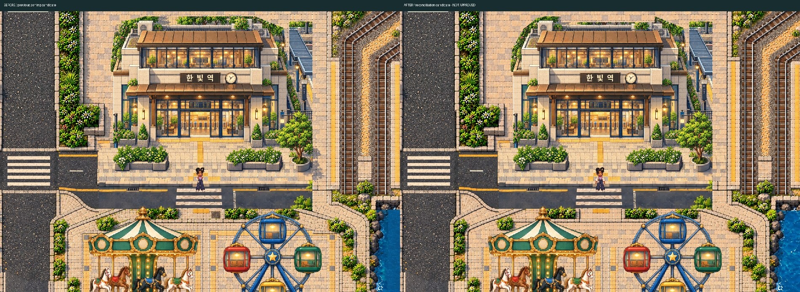
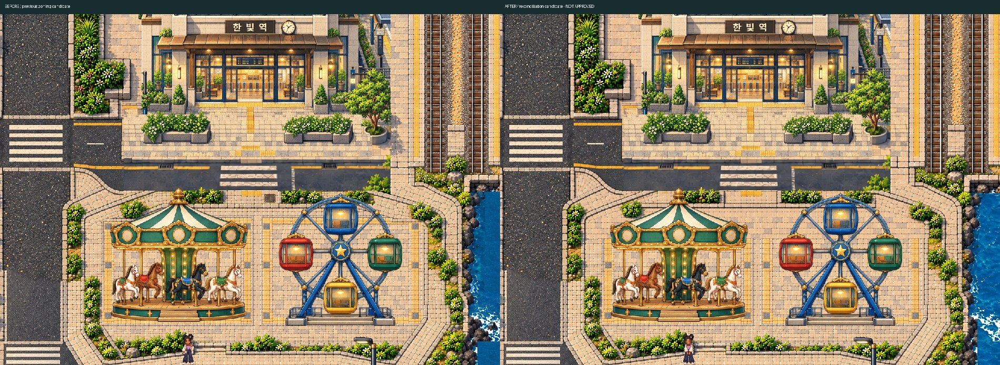
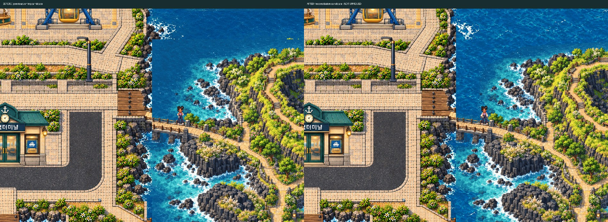
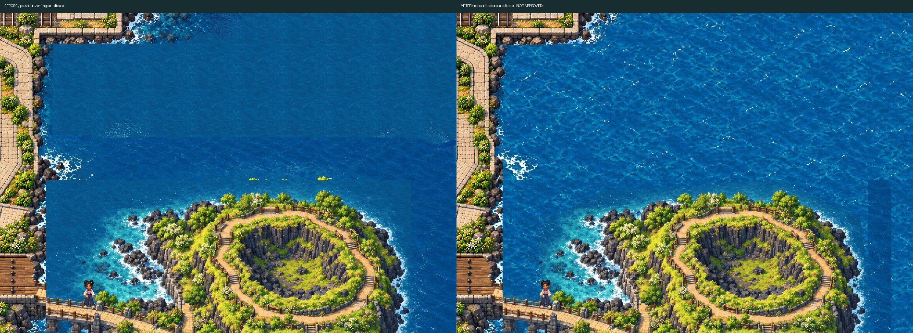
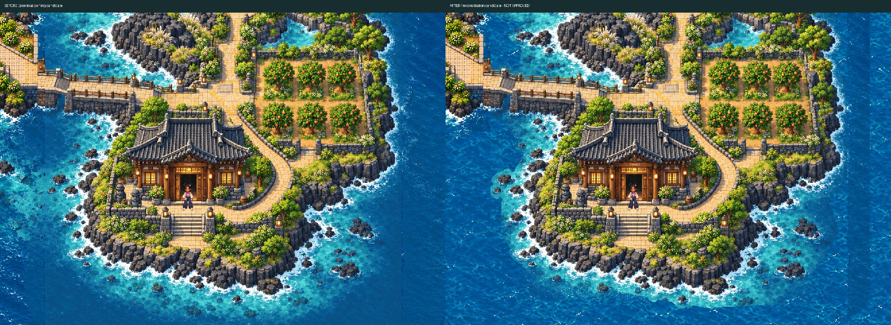
Native original facade pixels registered to plinth bottom750, roof retained. Main candidate remains unchanged. Collision/door support still requires final review. Academy clipped-source conflict remains separate.
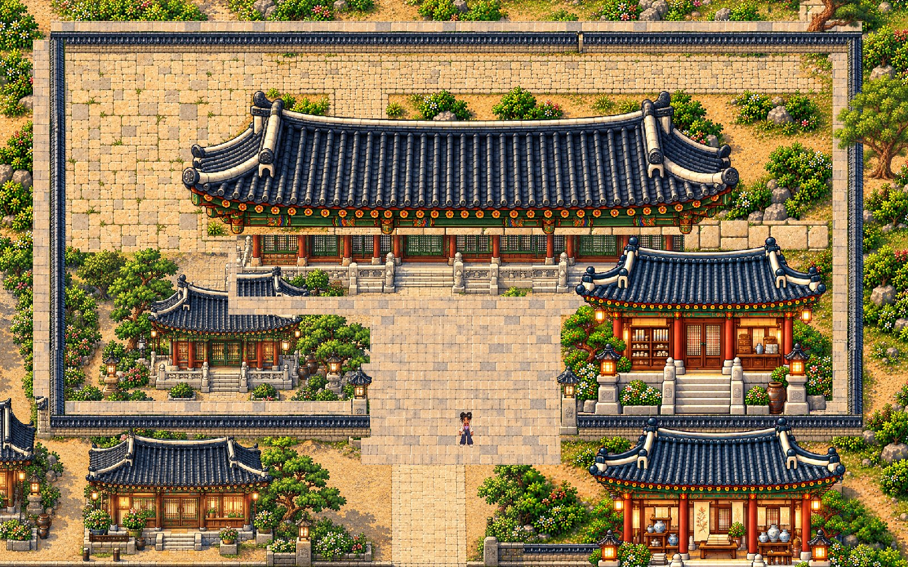
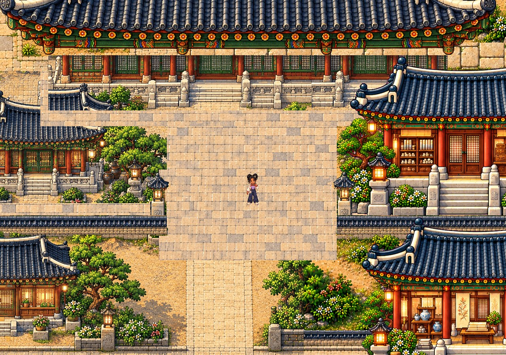
Four512px native crops; approved references preserved. This comparison is not automatic art acceptance.
Native comparison board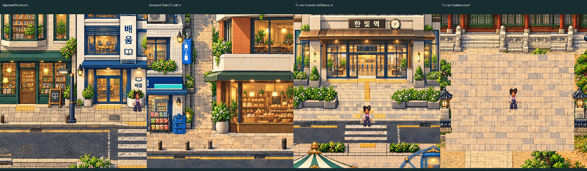
Continuous real keyboard movement; no teleport/collision overrides. Foot movement and visible-body clearance are reported separately. Failed attempts remain in the report.
Native-resolution recording · Actual movement · Body clearance · All planned route centerlines
1440-source hash report · Latest-checkpoint/registration/Jeju exception · Adjacent chunks/foreground inventory · Native pixel readback · Coverage · Physical-device handoff
Physical Android Chrome/iPhone Safari and hardware WebGL performance: NOT TESTED. Bakery remains required/unplaced; W0 rejected/Q1 land unallocated. Stop for consolidated human review.